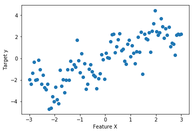
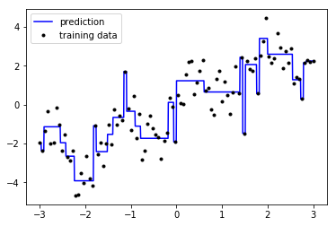
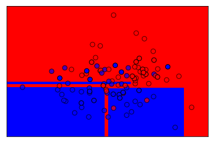
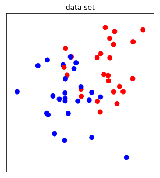
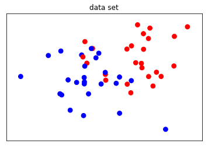
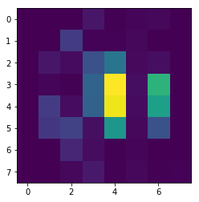

scikit-笔记17:深入理解决策树与随机森林
Table of Contents
1 In Depth - Decision Trees and Forests
1.1 Decision Tree
%matplotlib inline import numpy as np import matplotlib.pyplot as plt
1.1.1 what is a decision tree
Here we'll explore a class of algorithms based on decision trees. Decision trees at their root are extremely intuitive. They encode a series of "if" and "else" choices, similar to how a person might make a decision.
However, which questions to ask, and how to proceed for each answer is entirely learned from the data.
For example, if you wanted to create a guide to identifying an animal found in nature, you might ask the following series of questions:
- Is the animal bigger or smaller than a meter long?
- bigger: does the animal have horns?
- yes: are the horns longer than ten centimeters?
- no: is the animal wearing a collar
- smaller: does the animal have two or four legs?
- two: does the animal have wings?
- four: does the animal have a bushy tail?
- bigger: does the animal have horns?
and so on. This binary splitting of questions is the essence of a decision tree.
1.1.2 benefit of tree-based model.
One of the main benefit of tree-based models is that:
- they require little preprocessing of the data.
- They can work with variables of different types (continuous and discrete)
- invariant to scaling of the features.
nonparametric model.
What is called "nonparametric", which means they don't have a fix set of parameters to learn. Instead, a tree model can become more and more flexible, if given more data. In other words, the number of free parameters grows with the number of samples and is not fixed, as for example in linear models.
1.1.3 decision tree regression
A decision tree is a simple binary classification tree that is similar to nearest neighbor classification. It can be used as follows:
from figures import make_dataset x, y = make_dataset() X = x.reshape(-1, 1) plt.figure() plt.xlabel('Feature X') plt.ylabel('Target y') plt.scatter(X, y);

from sklearn.tree import DecisionTreeRegressor reg = DecisionTreeRegressor(max_depth=5) #<- max_depth reg.fit(X, y) X_fit = np.linspace(-3, 3, 1000).reshape((-1, 1)) y_fit_1 = reg.predict(X_fit) plt.figure() plt.plot(X_fit.ravel(), y_fit_1, color='blue', label="prediction") plt.plot(X.ravel(), y, '.k', label="training data") plt.legend(loc="best");

1.1.4 the drawbacks of decision tree regression
A single decision tree allows us to estimate the signal in a non-parametric way, but clearly has some issues.
In some regions, the model shows high bias and under-fits the data. (seen in the long flat lines which don't follow the contours of the data), while in other regions the model shows high variance and over-fits the data (reflected in the narrow spikes which are influenced by noise in single points).
1.1.5 decision tree classification
Decision tree classification work very similarly, by assigning all points within a leaf the majority class in that leaf:
from sklearn.datasets import make_blobs from sklearn.model_selection import train_test_split from sklearn.tree import DecisionTreeClassifier from figures import plot_2d_separator X, y = make_blobs(centers=[[0, 0], [1, 1]], random_state=61526, n_samples=100) X_train, X_test, y_train, y_test = train_test_split(X, y, random_state=42) clf = DecisionTreeClassifier(max_depth=5) clf.fit(X_train, y_train) plt.figure() plot_2d_separator(clf, X, fill=True) plt.scatter(X_train[:, 0], X_train[:, 1], c=np.array(['b', 'r'])[y_train], s=60, alpha=.7, edgecolor='k') plt.scatter(X_test[:, 0], X_test[:, 1], c=np.array(['b', 'r'])[y_test], s=60, edgecolor='k');

1.1.6 how to tune decision tree by max_depth
There are many parameter that control the complexity of a tree, but the one that
might be easiest to understand is the maximum depth. This limits how finely
the tree can partition the input space, or how many "if-else" questions can
be asked before deciding which class a sample lies in.
This parameter is important to tune for trees and tree-based models. The interactive plot below shows how underfit and overfit looks like for this model. Having a max_depth of 1 is clearly an underfit model, while a depth of 7 or 8 clearly overfits. The maximum depth a tree can be grown at for this dataset is 8, at which point each leave only contains samples from a single class. This is known as all leaves being "pure."
In the interactive plot below, the regions are assigned blue and red colors to indicate the predicted class for that region. The shade of the color indicates the predicted probability for that class (darker = higher probability), while yellow regions indicate an equal predicted probability for either class.
# %matplotlib inline from figures import plot_tree_interactive plot_tree_interactive()

Decision trees are fast to train, easy to understand, and often lead to interpretable models. However, single trees often tend to overfit the training data. Playing with the slider above you might notice that the model starts to overfit even before it has a good separation between the classes.
Therefore, in practice it is more common to combine multiple trees to produce models that generalize better. The most common methods for combining trees are random forests and gradient boosted trees.
1.2 Random Forests
Random forests are simply many trees, built on different random subsets (drawn with replacement) of the data, and using different random subsets (drawn without replacement) of the features for each split.
This makes the trees different from each other, and makes them overfit to different aspects. Then, their predictions are averaged, leading to a smoother estimate that overfits less.
from figures import plot_forest_interactive plot_forest_interactive()

1.2.1 parallel: RandomForestClassifier
we can selecting the optimal estimator via Cross-Validation
from sklearn.model_selection import GridSearchCV from sklearn.datasets import load_digits from sklearn.ensemble import RandomForestClassifier digits = load_digits() X, y = digits.data, digits.target X_train, X_test, y_train, y_test = train_test_split(X, y, random_state=42) rf = RandomForestClassifier(n_estimators=200) #<- n_estimators parameters = {'max_features':['sqrt', 'log2', 10], 'max_depth':[5, 7, 9]} clf_grid = GridSearchCV(rf, parameters, n_jobs=-1) clf_grid.fit(X_train, y_train) clf_grid.score(X_train, y_train) clf_grid.score(X_test, y_test)
0.9755555555555555
1.2.2 sequential: Gradient Boosting
Another Ensemble method that can be useful is Boosting: here:
- rather than looking at 200 (say) parallel estimators,
We construct a chain of 200 estimators which
iteratively refine the results of the previous estimator. The idea is that by sequentially applying very fast, simple models, we can get a total model error which is better than any of the individual pieces.
from sklearn.ensemble import GradientBoostingRegressor clf = GradientBoostingRegressor(n_estimators=100, max_depth=5, learning_rate=.2) clf.fit(X_train, y_train) print(clf.score(X_train, y_train)) print(clf.score(X_test, y_test))
from sklearn.datasets import load_digits from sklearn.ensemble import GradientBoostingClassifier digits = load_digits() X_digits, y_digits = digits.data, digits.target # split the dataset, apply grid-search
1.2.3 The most advantages: Feature importance
Both RandomForest and GradientBoosting objects expose a
feature_importances_ attribute when fitted.
This attribute is one of the most powerful feature of these models. They basically quantify how much each feature contributes to gain in performance in the nodes of the different trees.
X, y = X_digits[y_digits < 2], y_digits[y_digits < 2] rf = RandomForestClassifier(n_estimators=300, n_jobs=1) rf.fit(X, y) print(rf.feature_importances_) # one value per feature
plt.figure() plt.imshow(rf.feature_importances_.reshape(8, 8), cmap=plt.cm.viridis, interpolation='nearest')
<matplotlib.image.AxesImage at 0x7ff5068f79e8>

2 Exercise
2.1 exercise 1
EXERCISE: Cross-validating Gradient Boosting: Use a grid search to optimize the learning_rate and max_depth for a Gradient Boosted Decision tree on the digits data set.
3 Misc tools
3.0.1 ML models by now
- from sklearn.datasets import make_blobs
- from sklearn.datasets import make_regression
- from sklearn.datasets import load_iris
- from sklearn.datasets import load_digits
- from sklearn.model_selection import train_test_split
- from sklearn.model_selection import cross_val_score
- from sklearn.model_selection import KFold
- from sklearn.model_selection import StratifiedKFold
- from sklearn.model_selection import ShuffleSplit
- from sklearn.model_selection import GridSearchCV
- from sklearn.model_selection import learning_curve
- from sklearn.linear_model import LogisticRegression
- from sklearn.linear_model import LinearRegression
- from sklearn.linear_model import Ridge
- from sklearn.linear_model import Lasso
- from sklearn.linear_model import ElasticNet
- from sklearn.neighbors import KNeighborsClassifier
- from sklearn.neighbors import KNeighborsRegressor
- from sklearn.preprocessing import StandardScaler
- from sklearn.decomposition import PCA
- from sklearn.metrics import confusion_matrix, accuracy_score
- from sklearn.metrics import adjusted_rand_score
- from sklearn.metrics.scorer import SCORERS
- from sklearn.metrics import r2_score
- from sklearn.cluster import KMeans
- from sklearn.cluster import KMeans
- from sklearn.cluster import MeanShift
- from sklearn.cluster import DBSCAN # <<< this algorithm has related sources in LIHONGYI's lecture-12
- from sklearn.cluster import AffinityPropagation
- from sklearn.cluster import SpectralClustering
- from sklearn.cluster import Ward
- from sklearn.metrics import confusion_matrix
- from sklearn.metrics import accuracy_score
- from sklearn.metrics import adjusted_rand_score
- from sklearn.metrics import classification_report
- from sklearn.feature_extraction import DictVectorizer
- from sklearn.feature_extraction.text import CountVectorizer
- from sklearn.feature_extraction.text import TfidfVectorizer
- from sklearn.preprocessing import Imputer
- from sklearn.dummy import DummyClassifier
- from sklearn.pipeline import make_pipeline
- from sklearn.svm import LinearSVC
- from sklearn.svm import SVC
- from sklearn.tree import DecisionTreeRegressor *
- from sklearn.ensemble import RandomForestClassifier *
- from sklearn.ensemble import GradientBoostingRegressor *